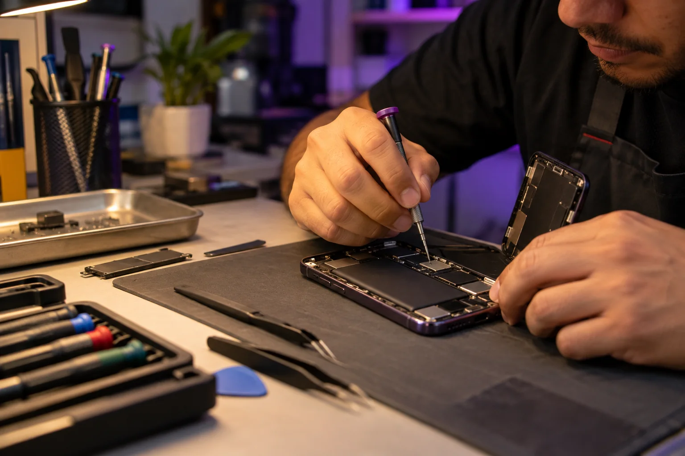

La membresía liss
El equipo es el comienzo. El respaldo es parte del camino.
Estamos diseñando una forma más clara de acceder a tecnología: una cuota mensual definida, acompañamiento y protección prevista para cuando la vida pasa.
Conoce la propuestaLo que queremos reunir
Una membresía.
Más tranquilidad.
La propuesta combina acceso al equipo con una relación de servicio continua. Los detalles y las condiciones se publicarán antes de abrir.
Un equipo para usar
Un teléfono para tu día a día, dentro de un ciclo de membresía acordado.
Acompañamiento de liss
Un punto de contacto para dudas y gestiones relacionadas con tu equipo.
Protección prevista
El modelo contempla un seguro en caso de daño o robo. Cobertura, exclusiones y procedimiento están por definirse.
Cuando algo no sale como esperabas
No te dejamos adivinando qué sigue.
Estamos definiendo un proceso claro para atender incidentes. Explora cómo se plantea cada situación.
Primero entendemos el daño.
Contactas a liss y evaluamos el equipo. Las reparaciones se gestionan con nosotros. Antes de sumar cualquier importe a tu cuenta, te presentaremos el presupuesto y solicitaremos tu autorización.
La cobertura del seguro y un posible monto a tu cargo dependerán de las condiciones definitivas.
Te ayudamos a seguir el proceso.
Nos informas lo ocurrido y te indicamos los pasos para tramitar el incidente. El seguro previsto contempla robo, sujeto a sus requisitos, cobertura y exclusiones definitivas.
No prometemos reemplazo automático ni una cobertura ilimitada.

Reparaciones sin sorpresas
Lo vemos contigo, paso a paso.
- 1Nos cuentas qué pasó.
- 2Evaluamos y te explicamos las opciones.
- 3Si hay un costo a tu cargo, lo cotizamos y pedimos tu autorización antes de sumarlo a tu cuenta.
Proceso propuesto, sujeto a las condiciones finales de la membresía y del seguro.
Una regla importante
Tú lo usas.
El equipo es de liss.
Durante todo el contrato el dispositivo pertenece a liss. Al finalizar el ciclo se devuelve. Después puedes renovar tu membresía o rescindirla.
No hay transferencia de propiedad al cierre del contrato. Queremos que esa diferencia sea tan clara como el resto de las condiciones.